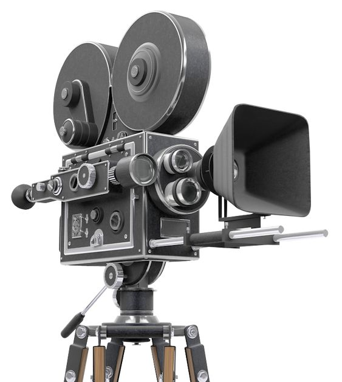

Film Cameras
Film cameras capture images on photographic film, a medium that has been used for over a century. Despite the rise of digital photography, film cameras are still cherished by many photographers for their unique aesthetic, tactile experience, and the artistry involved in the developing process.
Features of Film Cameras
Some key features of film cameras include:
- Use of photographic film to capture images
- Variety of film formats (35mm, medium format, large format)
- Manual controls for exposure settings
- Mechanical simplicity and reliability
- Ability to produce physical negatives
Popular Film Camera Brands and Models
Some popular brands and models in the film camera market include:
- Canon AE-1
- Nikon F3
- Leica M6
- Hasselblad 500C/M
- Pentax K1000
Film cameras offer a nostalgic and rewarding photography experience, providing a distinct look and feel that many photographers still appreciate today.